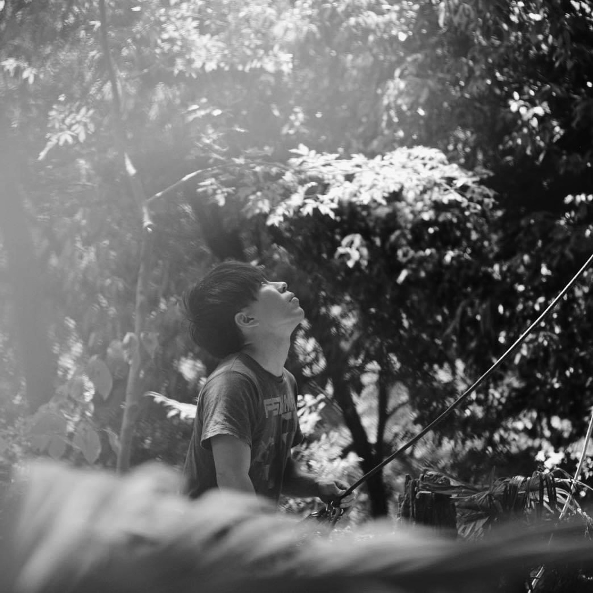

About
About.

Shota Fumoto is a Japanese photographer based in Tbilisi, Georgia.
He photographs people as they are — not the role they play, but the person underneath. His work moves between documentary portraiture, fashion editorial, and architectural photography, always looking for the moment before the mask.
Available for portrait, editorial, architectural, and commercial assignments worldwide.
麓翔太(ふもと しょうた)。日本人写真家。現在ジョージア・トビリシを拠点に活動。
人を、役割としてではなく、その下にある一人の人間として撮る。ドキュメンタリーポートレート、ファッションエディトリアル、建築写真の領域を横断しながら、仮面が下りる直前の瞬間を撮影する。
建築・内観・ポートレート・エディトリアルなど、海外ロケが必要な案件を日本のクライアントから受け付けています。
-
2026
1st Prize · 2nd World Youth Humanities Photography Contest
Tongji University, Shanghai -
2022 – 2024
Official Photographer
FIT For Charity Run, Tokyo